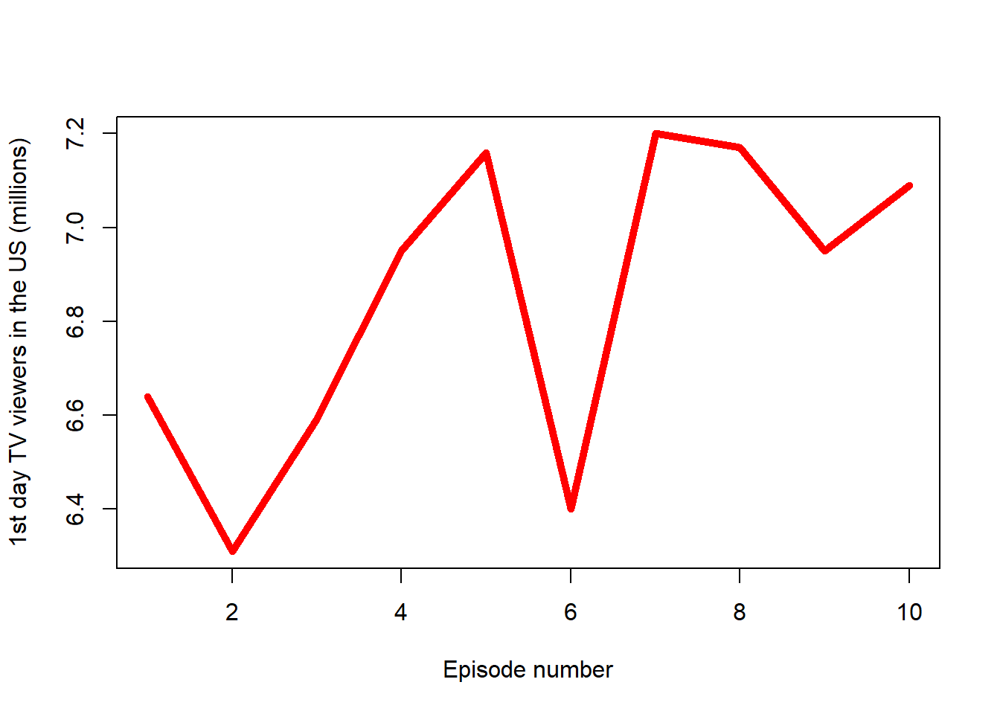

season_i = paste("../Data/", params$season, ".RData", sep = "")
load(season_i)Assignment: Game of Thrones Season Summary
Game of Thrones - Season summary in numbers
(Warning: spoilers ahead)
Overview
(Wikipedia 2023) Game of Thrones is an American fantasy drama television series created by David Benioff and D. B. Weiss for HBO. It is an adaptation of A Song of Ice and Fire, a series of fantasy novels by George R. R. Martin, the first of which is A Game of Thrones.
Set on the fictional continents of Westeros and Essos, Game of Thrones has a large ensemble cast and follows several story arcs throughout the course of the show. A major arc concerns the Iron Throne of the Seven Kingdoms of Westeros through a web of political conflicts among the noble families either vying to claim the throne or fighting for independence from it. Another focuses on the last descendant of the realm’s deposed ruling dynasty, who has been exiled to Essos and is plotting a return to the throne. A third story arc follows the Night’s Watch, a military order defending the realm against threats from the North.
Season summary
# setwd("..")
# season = "season_1"
# path_name = paste(getwd(), "/Data/", season, ".csv", sep = "")
# data = read.csv(path_name)
number_episodes = nrow(season_data)
dates = as.list(season_data["premiere_date"])
library(stringr)
season_start = format(as.Date(str_sub(dates[[1]][1], -12, -1), "(%Y-%m-%d"), "%d %B %Y")
season_end = format(as.Date(str_sub(dates[[1]][number_episodes], -12, -1), "(%Y-%m-%d"), "%d %B %Y")
viewers_mean = mean(as.list(season_data["viewers"])[[1]])
viewers_start = as.list(season_data["viewers"])[[1]][1]
viewers_end = as.list(season_data["viewers"])[[1]][number_episodes]
viewers_max = max(as.list(season_data["viewers"])[[1]])
data_popular = subset(season_data, viewers == viewers_max, select = c("title", "description"))
data_popular_title = data_popular[[1]]
data_popular_description = data_popular[[2]]The season of Game of Thrones consisted of 10 episodes that aired between 24 April 2016 and 26 June 2016 on HBO. The show gathered an average of 7.688 million first-day TV viewers in the US, with the number changing from 7.94 to 8.89 million by the end of the season.
The most popular episode of the season was “The Winds of Winter”, in which:
Before her trial, Cersei destroys the Sept of Baelor by wildfire, killing the High Sparrow, the Tyrells, Lancel and Kevan Lannister, hundreds of nobles, and the Faith Militant; Qyburn has Pycelle killed. Cersei reveals her incest with Jamie and that she killed Robert Baratheon to Septa Unella before having Ser Robert Strong aka Gregor Clegane torture her until she dies. Distraught over Margaery’s death, Tommen commits suicide. In Dorne, Varys meets with Olenna and Ellaria, seeking an alliance between Daenerys and their Houses against the Lannisters. Davos confronts Melisandre over Princess Shireen’s death, resulting in Jon banishing her. Led by Lyanna Mormont, the Wildlings and the surviving northern Houses pledge loyalty to Jon as King of the North. Sansa rebuffs Littlefinger’s romantic overtures. Arya kills Walder Frey and his sons. Sam and Gilly reach the Citadel in Oldtown. Benjen accompanies Brandon and Meera to the Wall but is unable to go further. In a vision, Bran sees Ned finding Lyanna Stark as she lies dying after giving birth (to Jon Snow) during King Robert’s rebellion. Jaime returns to King’s Landing, and Cersei is crowned Queen of the Seven Kingdoms. Daenerys names Tyrion Hand of the Queen and sails for Westeros with the Greyjoys, her armies, and her dragons, leaving Dario Naharis and the Second Sons behind to rule Meereen until new leaders are elected.
You can see how the viewership of the episodes changed in Figure 1.
plot(season_data$viewers, type="l", col="red", lwd=5, xlab = "Episode number", ylab = "1st day TV viewers in the US (millions)")
Finally, the episodes with the above-average viewership were:
data_above_mean = subset(season_data, viewers > viewers_mean, select = c("no_season", "title", "directed_by"))
print(data_above_mean) no_season title directed_by
1 1 "The Red Woman" Jeremy Podeswa
7 4 "Book of the Stranger" Daniel Sackheim
9 5 "The Door" Jack Bender
13 7 "The Broken Man" Mark Mylod
19 10 "The Winds of Winter" Miguel SapochnikReferences
Wikipedia. 2023. “Game of Thrones.” https://en.wikipedia.org/wiki/Game_of_Thrones#Premise.